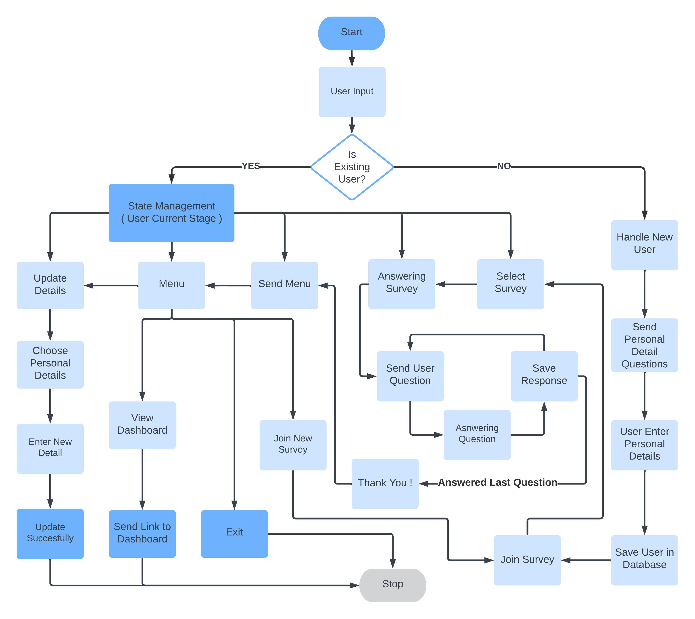
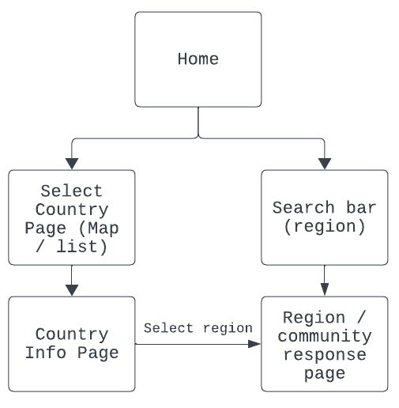

System Architecture
Our project's system architecture is designed to efficiently collect, process, and visualize survey data, leveraging a suite of modern technologies and platforms to ensure scalability, security, and user engagement.
Survey Tool: Our survey tool is powered by Twilio, which integrates seamlessly with WhatsApp, enabling us to reach and engage participants globally. This integration allows users to easily participate in surveys directly from their WhatsApp application, making the data collection process both accessible and user-friendly.
Data Storage and Management: Responses gathered from the survey tool are securely transmitted and stored in a MySQL database. MySQL serves as our primary data repository, chosen for its proven reliability, performance, and support for complex queries, ensuring the integrity and accessibility of our survey data.
Backend Services: Our backend, developed with Django, acts as the backbone of our application, orchestrating the flow of data between the survey tool, database, and front-end dashboard. This backend infrastructure, including the APIs that facilitate data exchange, as well as the database, is hosted on Microsoft Azure, taking advantage of Azure's high availability, security, and scalability.
Frontend: The front-end dashboard, built with React, presents an interactive and intuitive interface for data visualization and analysis. Utilizing libraries like React Simple Maps and ApexCharts, we offer users detailed geospatial visualizations and insightful charts, enabling a deep dive into the survey data. React's component-based architecture allows for a maintainable codebase, ensuring the dashboard remains responsive and up-to-date with the latest survey results.
Integration and Flow: The system architecture is designed to support a seamless flow of information from survey collection through Twilio and WhatsApp, to data storage in MySQL, processing by the Django backend, and finally to visualization on the React front-end dashboard. This integrated approach ensures that survey insights are quickly and effectively transformed into actionable intelligence for the IFRC, supporting their mission to respond to the needs of vulnerable communities around the globe.
Survey Bot Flow Diagram
Survey Bot is built to offer a seamless interaction experience, guiding users through a structured path of survey participation and personal detail management. Its dialogue flow is carefully designed to ensure user interactions are intuitive, with minimal friction, allowing for straightforward navigation through its different functionalities, whether updating personal details, engaging in surveys, or accessing the dashboard.
Site Map
The Site Map for the dashboard (Front End) is relatively simple and intuitive. Firstly, the home page is the entry point of the dashboard. Users can initiate their journey either by using the search bar to find a region directly or by navigating to the Select Country page to explore responses by country. This can also be done on the navbar. The Select Country page allows the user to either search for a country by selecting on a map or on a list. Once a country is selected, the user is brought to the country's info page which has demographics information about the country as well as a list of available regions. Finally, the region / community response page is either accessed by selecting the region in the country page or by searching for a region in the search bar.
